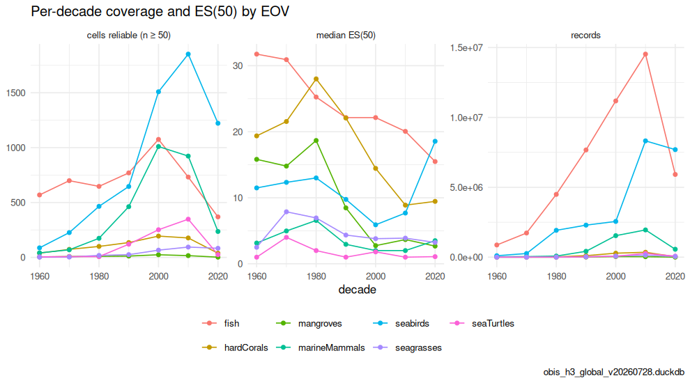
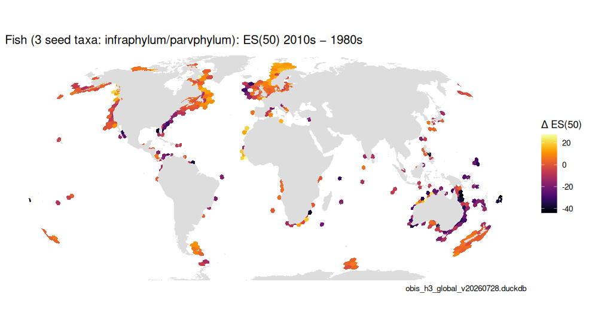
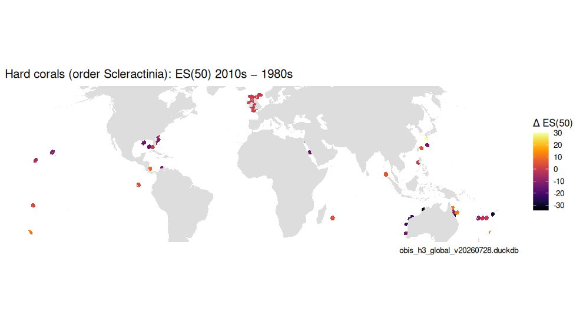
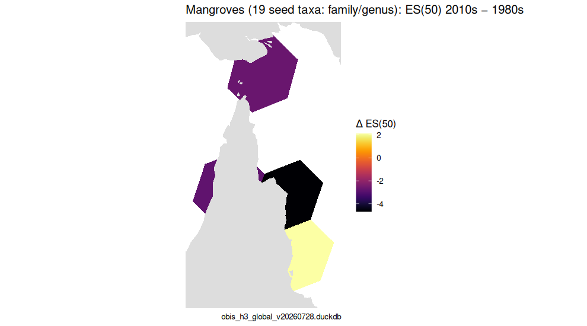
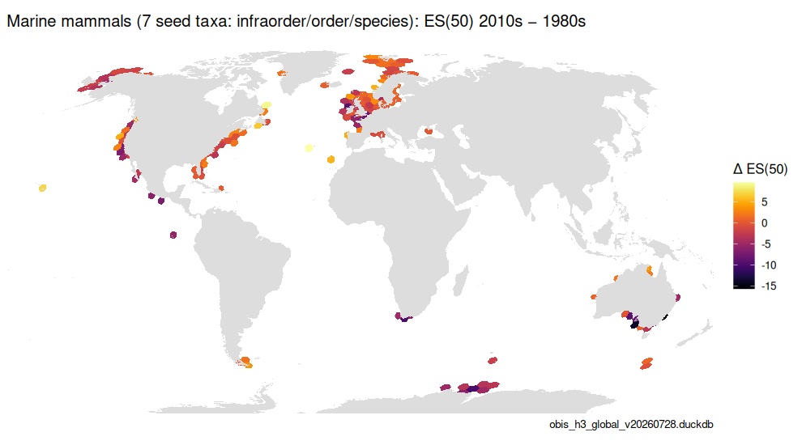
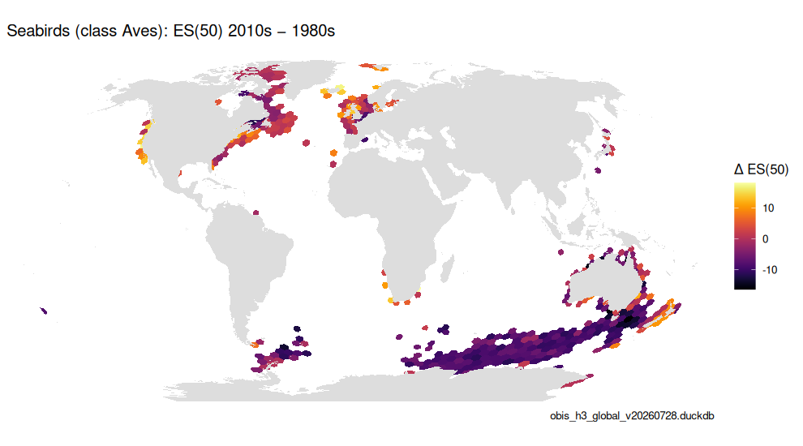
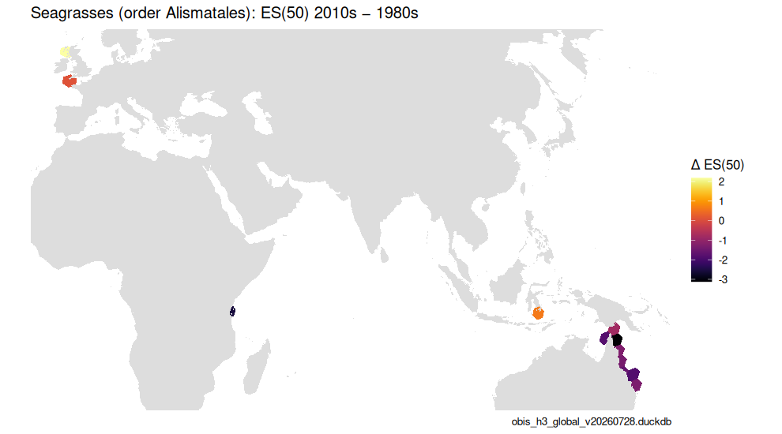
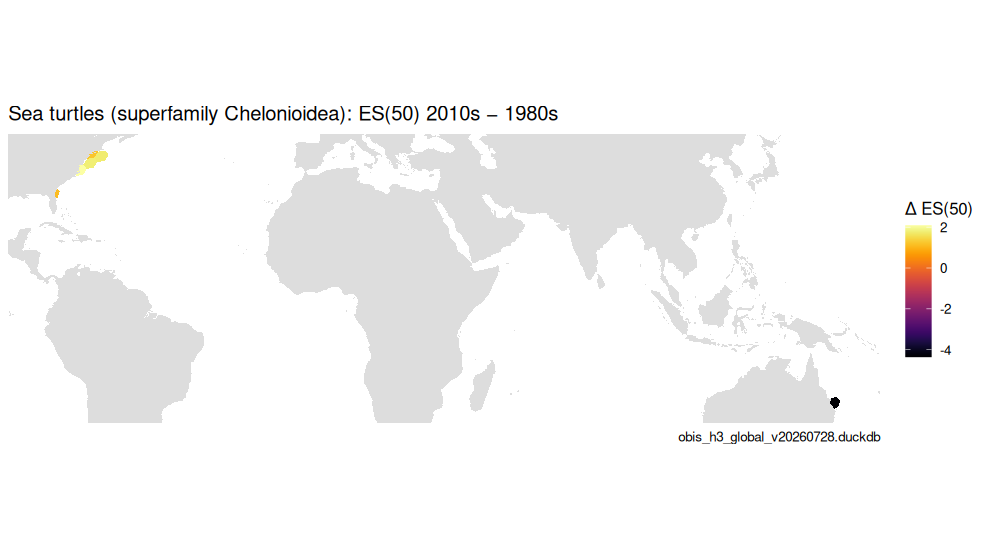

occ_h3 carries the year of each record, so any indicator
can be computed per period and cell. This article does that per decade
for each Essential Ocean Variable and maps where ES(50) changed between
two decades — Figure 5 of the OBIS → H3 → EOV manuscript. It is the
store-backed counterpart of vignette("temporal_subsets"),
which does the same on the shipped occ_* samples in
memory.
Two rules keep the comparison honest. ES(50) needs at least 50
records in a cell-decade to be reliable, so the “reliable cells” count
is reported alongside the raw record count. And change is only computed
where both decades are reliable
(calc_period_change()), so a map of Δ ES(50) never mixes
“fewer species” with “fewer surveys”.
library(obisindicators)
library(dplyr)
library(ggplot2)
con <- obis_store_connect() # the store named by OBIS_H3_DUCKDBPrecomputed. The store is not available where this documentation is built, so the chunks below were run locally by
data-raw/precompute_articles.Rand their output committed. This render used obis_h3_global_v20260728.duckdb, the global store.
Indicators per decade and cell
A coarser resolution (H3 2) than the maps in vignette("eov"), because splitting
records across seven decades thins each cell (see vignette("scaling")).
starts <- seq(1960L, 2020L, by = 10L)
pd <- bind_rows(lapply(EOV_ORDER, function(e) {
d <- calc_period_indicators(con, res = RES_TIME, eov = e, starts = starts, esn = 50L)
if (nrow(d)) cbind(eov = e, d) else NULL
}))
summ <- pd |>
group_by(eov, period) |>
summarize(cells = n(), cells_reliable = sum(n >= 50), records = sum(as.numeric(n)),
median_es = median(es[n >= 50], na.rm = TRUE), .groups = "drop")
knitr::kable(summ |> mutate(median_es = round(median_es, 2)),
caption = sprintf("Per-decade coverage and ES(50) by EOV, H3 resolution %d", RES_TIME))| eov | period | cells | cells_reliable | records | median_es |
|---|---|---|---|---|---|
| fish | 1960 | 2621 | 569 | 873166 | 31.75 |
| fish | 1970 | 2048 | 699 | 1729628 | 30.91 |
| fish | 1980 | 1855 | 647 | 4493283 | 25.25 |
| fish | 1990 | 1983 | 770 | 7673014 | 22.14 |
| fish | 2000 | 2405 | 1075 | 11180145 | 22.14 |
| fish | 2010 | 1727 | 732 | 14529812 | 20.05 |
| fish | 2020 | 611 | 369 | 5919572 | 15.48 |
| hardCorals | 1960 | 429 | 39 | 9178 | 19.37 |
| hardCorals | 1970 | 395 | 73 | 16975 | 21.54 |
| hardCorals | 1980 | 406 | 100 | 25819 | 28.00 |
| hardCorals | 1990 | 452 | 135 | 108106 | 22.07 |
| hardCorals | 2000 | 531 | 194 | 285517 | 14.44 |
| hardCorals | 2010 | 438 | 177 | 350381 | 8.88 |
| hardCorals | 2020 | 149 | 38 | 29324 | 9.45 |
| mangroves | 1960 | 18 | 4 | 474 | 15.81 |
| mangroves | 1970 | 21 | 8 | 1330 | 14.79 |
| mangroves | 1980 | 28 | 9 | 1234 | 18.67 |
| mangroves | 1990 | 47 | 12 | 8180 | 8.46 |
| mangroves | 2000 | 42 | 24 | 41486 | 2.75 |
| mangroves | 2010 | 42 | 16 | 34009 | 3.67 |
| mangroves | 2020 | 21 | 2 | 1516 | 2.68 |
| marineMammals | 1960 | 353 | 41 | 31254 | 3.14 |
| marineMammals | 1970 | 456 | 69 | 40500 | 4.97 |
| marineMammals | 1980 | 794 | 174 | 79937 | 6.56 |
| marineMammals | 1990 | 1309 | 462 | 420446 | 2.95 |
| marineMammals | 2000 | 1992 | 1010 | 1539634 | 2.00 |
| marineMammals | 2010 | 1874 | 923 | 1949809 | 2.00 |
| marineMammals | 2020 | 841 | 236 | 566727 | 3.50 |
| seaTurtles | 1960 | 44 | 5 | 1215 | 1.00 |
| seaTurtles | 1970 | 68 | 7 | 2278 | 4.00 |
| seaTurtles | 1980 | 98 | 7 | 2373 | 2.00 |
| seaTurtles | 1990 | 631 | 120 | 26627 | 1.00 |
| seaTurtles | 2000 | 2023 | 252 | 69536 | 1.80 |
| seaTurtles | 2010 | 1497 | 348 | 264713 | 1.00 |
| seaTurtles | 2020 | 203 | 25 | 72599 | 1.08 |
| seabirds | 1960 | 447 | 87 | 105855 | 11.49 |
| seabirds | 1970 | 796 | 226 | 261923 | 12.33 |
| seabirds | 1980 | 1166 | 465 | 1921326 | 13.00 |
| seabirds | 1990 | 1890 | 646 | 2292579 | 9.75 |
| seabirds | 2000 | 3815 | 1509 | 2557880 | 5.90 |
| seabirds | 2010 | 4277 | 1852 | 8322502 | 7.68 |
| seabirds | 2020 | 2950 | 1222 | 7696206 | 18.55 |
| seagrasses | 1960 | 23 | 2 | 659 | 2.50 |
| seagrasses | 1970 | 52 | 3 | 703 | 7.87 |
| seagrasses | 1980 | 89 | 18 | 4380 | 6.94 |
| seagrasses | 1990 | 111 | 25 | 30889 | 4.35 |
| seagrasses | 2000 | 192 | 66 | 80068 | 3.80 |
| seagrasses | 2010 | 326 | 94 | 141857 | 3.88 |
| seagrasses | 2020 | 309 | 83 | 51186 | 3.23 |
long <- bind_rows(
transmute(summ, eov, period, metric = "cells reliable (n ≥ 50)", value = cells_reliable),
transmute(summ, eov, period, metric = "records", value = records),
transmute(summ, eov, period, metric = "median ES(50)", value = median_es))
p <- ggplot(long, aes(x = period, y = value, color = eov)) +
geom_line() + geom_point(size = 1.5) +
facet_wrap(~ metric, scales = "free_y") +
labs(x = "decade", y = NULL, color = NULL, title = "Per-decade coverage and ES(50) by EOV",
caption = store_label) +
theme_minimal(base_size = 11) + theme(legend.position = "bottom")
p
plot of chunk fig5a
Records climb steeply into the 2000s and 2010s for every EOV — that is observation effort, not biodiversity — which is exactly why the change maps below gate on reliability in both decades rather than comparing raw counts.
Change maps, 1980s → 2010s
calc_period_change() returns the per-cell difference for
cells reliable in both decades, plus a coverage summary (cells reliable
only in one decade or the other are reported, not mapped).
for (e in unique(pd$eov)) {
ch <- calc_period_change(filter(pd, eov == e), from = 1980L, to = 2010L, esn = 50L)
if (nrow(ch$cells) < 3) next
cat("\n\n### ", obis_eov_label(e), " — cells reliable in both: ", ch$coverage$both,
" (only 1980s: ", ch$coverage$only_from, "; only 2010s: ", ch$coverage$only_to, ")\n\n", sep = "")
p <- gmap_cells(ch$cells, "delta", label = "Δ ES(50)") +
labs(title = paste0(obis_eov_label(e, max_taxa = 1L), ": ES(50) 2010s − 1980s"),
caption = store_label)
save_fig(p, paste0("fig5b_change_", e), ch$cells, width = 9, height = 5)
print(p)
}Fish (Agnatha, Chondrichthyes, Osteichthyes) — cells reliable in both: 387 (only 1980s: 260; only 2010s: 345)
Hard corals (order Scleractinia) — cells reliable in both: 43 (only 1980s: 57; only 2010s: 134)

plot of chunk fig5b
Mangroves (19 seed taxa: family/genus) — cells reliable in both: 4 (only 1980s: 5; only 2010s: 12)

plot of chunk fig5b
Marine mammals (7 seed taxa: infraorder/order/species) — cells reliable in both: 141 (only 1980s: 33; only 2010s: 782)

plot of chunk fig5b
Seabirds (class Aves) — cells reliable in both: 408 (only 1980s: 57; only 2010s: 1444)

plot of chunk fig5b
Seagrasses (order Alismatales) — cells reliable in both: 13 (only 1980s: 5; only 2010s: 81)

plot of chunk fig5b
Sea turtles (superfamily Chelonioidea) — cells reliable in both: 6 (only 1980s: 1; only 2010s: 342)

plot of chunk fig5b

plot of chunk fig5b
EOVs with fewer than three cells reliable in both decades are skipped — on a regional demo store that is most of them; the global store fills in the rest.
DBI::dbDisconnect(con, shutdown = TRUE)